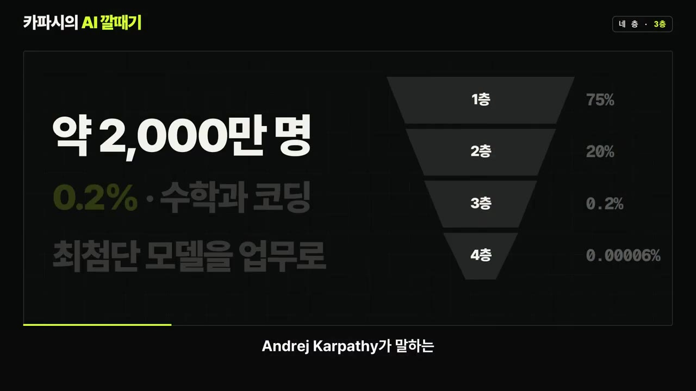
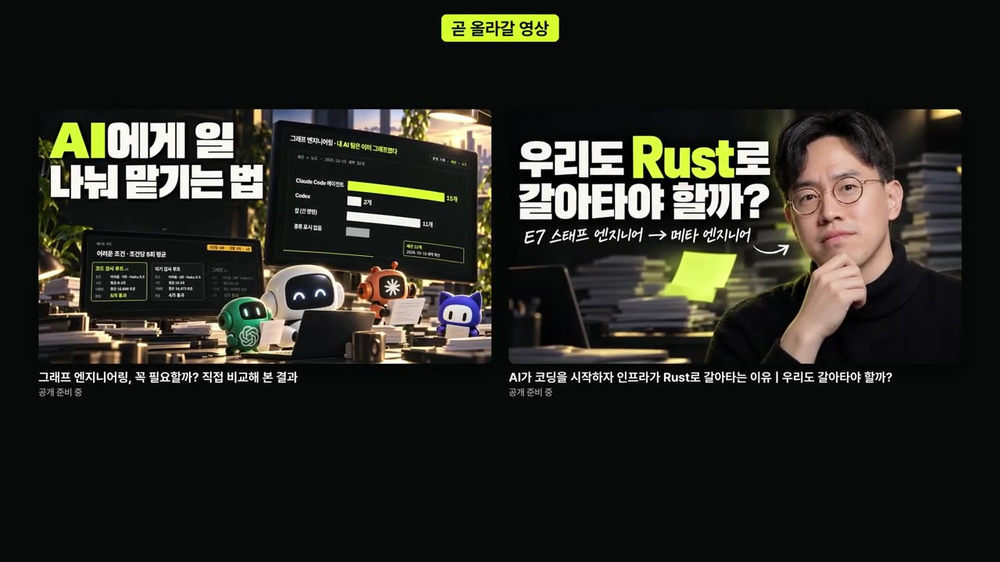
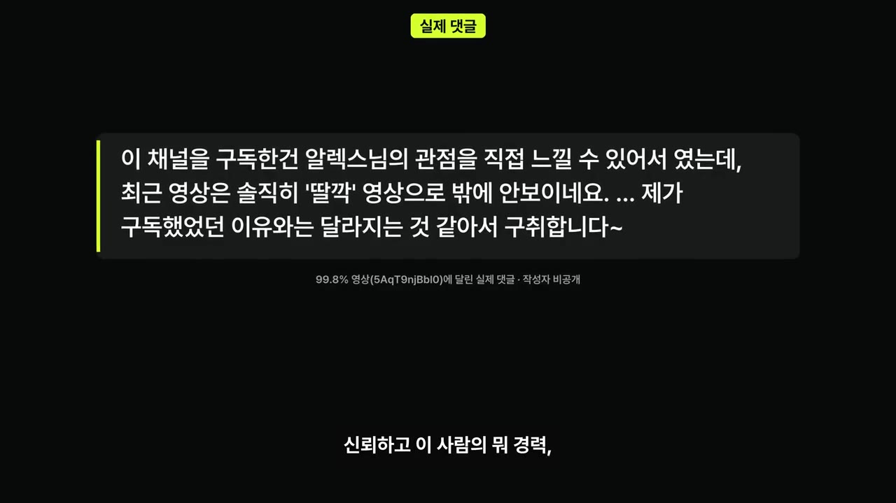

AI로 만든 영상, 이 채널에 계속 올려도 될까요?
▶ 원본 영상 보기한눈에 보기
- 커리어해커 알렉스가 AI로 영상 편집뿐 아니라 제작까지 자동화해 올렸더니 "AI 딸깍 영상은 보기 싫다"와 "바쁜데 올려 주면 좋다"로 댓글이 반반 갈렸습니다.
- AI 영상은 원래 본인이 공부하려고 만든 것입니다. 글보다 따라가기 쉽고 인용·차트·모션 그래픽까지 들어가서 공개하기 시작했다고 합니다.
- 그는 정확하고 질이 높으면 AI가 만든 콘텐츠도 좋은 콘텐츠라고 봤습니다. 다만 시청자 반응을 보고 "완벽함보다 진실성이 더 가치 있다"는 생각에 이르렀습니다.
- 채널 방향으로 선택지 네 가지를 내놓았습니다. ① 다 AI로 하기 ② AI 영상은 다른 채널이나 쇼츠로 나누기 ③ AI는 쓰되 사람의 몫 넣기 ④ AI 쓰지 않기. 본인은 1번을 원합니다.
- 정보는 넘치고 AI가 정리도 잘하므로, 앞으로 크리에이터는 좋은 정보만으로는 경쟁하기 어렵다고 봅니다.
이런 분께 도움이 됩니다
- AI로 콘텐츠 제작을 자동화하려는 크리에이터: 시청자가 실제로 어디서 거부감을 느끼는지 볼 수 있습니다.
- AI 시대에 사람은 무엇을 맡아야 하는지 고민하는 직장인·개발자: 현업 엔지니어가 내린 답(검수·방향 설정·진실성)을 참고할 수 있습니다.
핵심 내용
AI로 영상 제작을 거의 끝까지 자동화 (0:00)
알렉스는 AI를 극한까지 써 보는 방법을 연구하다가 콘텐츠 자동화까지 하게 됐습니다. 직접 편집하는 것보다 AI가 낫다고 말합니다. "AI가 저보다 똑똑하고 체력도 좋다"는 이유입니다.
- 영상 편집
- 숏폼 추출
- 대본 없는 촬영
- 영상 제작
- 공개
- 1영상 편집
직접 찍은 유튜브 영상의 편집을 AI에 맡김 (0:23)
- 2숏폼 추출
롱폼과 라이브에서 숏폼을 뽑아냄. 라이브가 길수록 쓸 재료가 많아져 "라이브할 때 신이 난다" (0:46)
- 3대본 없는 촬영
퇴근하고 밥 먹은 뒤 대본 없이 켜도 AI가 편집해 주니 부담이 없음 (1:10)
- 4영상 제작
편집을 넘어 조사·대본·음성·자료 화면까지 AI가 만든 영상으로 확장 (1:20)
- 5공개
혼자 보기 아까워 몇 편을 공개하고 몇 편은 예약 걸어 둠 (2:19)
💡 라이브 한 번이 롱폼과 숏폼 여러 편의 재료가 된다. 이 재료를 영상으로 만드는 데 드는 품을 AI가 대신 진다.
원래는 내가 보려고 만든 영상들 (1:26)
궁금하지만 직접 조사할 시간도, 글로 된 보고서를 읽을 시간도 없는 주제를 영상으로 만들게 했습니다.
| 주제 | 만든 이유 |
|---|---|
| Andrej Karpathy가 말한 "0.2%만 쓰는 AI" | 무슨 뜻인지, 근거가 있는지 궁금해서 |
| Higgsfield 광고 제작 회고 | AI가 본인의 프롬프트와 피드백을 모두 기억하고 있어서 "내가 어떤 기법을 썼지?"를 요약하는 영상을 만들 수 있었음 |
| Graph Engineering이란 무엇인가 | 꼭 알아야 하는 용어인지 확인하려고 |
| AI 인프라가 Rust로 옮겨 가는 흐름 | 자주 들리는데 따로 공부할 시간이 없어서 |
ElevenLabs V4 API가 나온 뒤로 AI 음성 품질이 크게 좋아진 것도 공개를 결심한 계기였습니다.


효과와 갈린 댓글 반응 (2:50)
본인은 효과가 컸다고 평가합니다. 영상은 글보다 말의 흐름을 따라가기 쉽고, 인용구·논문 하이라이트·차트 애니메이션·모션 그래픽이 붙어 "나만을 위한 콘텐츠"처럼 느껴졌다고 합니다.
그런데 "세계 인구 99.8%는 진짜 AI를 써 보지 못했다" 영상에서 댓글이 반으로 갈렸습니다. 이 영상은 Karpathy의 트윗을 더 조사해 풀어 설명한 것입니다.
- 반대 ①: "경력과 전문성, 친절한 설명을 믿고 구독했는데 AI 딸깍 영상이 나와서 보기 싫다. 구독 취소한다." 알렉스는 "너무나 타당한 피드백"이라고 받아들였습니다.
- 반대 ②: "ChatGPT를 친절하게 설명하고 초보자를 돕던 영상이 없어져 아쉽다. 블로그를 읽는 것 같다."
- 응원: "본업이 바쁜데 안 올리는 것보다 낫다. 싫으면 안 보면 된다." 본인도 이쪽 생각이었습니다.

💡 시청자가 구독한 이유는 정보보다 '알렉스라는 사람'이었다. AI 영상이 그 부분을 지워 버렸다.
큐레이터·라이브·강의 (4:58)
그가 AI를 쓰는 이유는 시간입니다. Meta 엔지니어로 하루 종일 일하고 육아도 해서 하루 1시간도 내기 어렵습니다. 그래서 "공부하려고 만든 영상을 공유하면 일석이조"라고 생각했습니다.
- 라이브: 일주일에 한 번 라이브를 하고, AI가 롱폼과 숏폼으로 만듦
- 큐레이터 역할: 마크 저커버그와 알렉산더 왕의 2시간짜리 영어 인터뷰처럼 좋은 자료를 짜깁기하고 본인 해석을 덧붙여 공유
- 강의: 본인이 현업에서 만드는 에이전트 메모리(AI 에이전트가 정보를 기억하게 하는 기술)는 논문이 많고 따라가기 어려운데, 질 높은 강의가 없음. 본인이 공부하면서 검수·검증해 무료로 공개할 생각. 유료도 고려는 해 봄
그는 강의 시장이 크게 바뀔 거라고 봅니다. 질 높은 강의를 만드는 일은 어렵지 않아지고, "누가 만들었고 누가 검증했는가", 즉 신뢰가 더 중요해진다는 것입니다.
💡 콘텐츠의 가치가 '만드는 능력'에서 '검증하는 사람의 신뢰'로 옮겨 간다.
AI 콘텐츠는 좋은 콘텐츠일까 (6:48)
- AI가 낫다고 본 근거: 설명을 잘하고, 자료 화면을 잘 만들고, 실수가 적다. 강사 한 명이 아는 지식을 전하는 것보다 에이전트 여러 개가 토큰을 많이 써서 검증과 보고서 검수를 거치면 질이 더 높지 않겠냐는 논리
- 아닐 수도 있는 이유: 지금은 과도기라 사람들이 AI를 믿지 않음. 만든 사람이 누군지, 토큰을 얼마나 써서 Cross Reference·Cross Validation(교차 확인·교차 검증)을 했는지 시청자는 알 수 없음. 알렉스 본인도 남이 만든 AI 영상은 의심할 거라고 인정
- 본인은 자기 영상을 처음부터 끝까지 다 봤고 현업 지식이 있어 자신 있었지만, 시청자가 그렇게 판단하지 않을 수도 있음
- 개발 현장도 같음: "개발은 이제 무조건 AI가 다 한다." 사람은 검수·검증, 방향 설정, 중요한 결정만 맡고, 현장에서 이미 99% 이상 그렇게 일한다고 주장
- 결론(본인 생각): 완벽함보다 진실성이 더 높은 가치를 가지게 된다. 그래서 이 영상은 대본 없이 AI 없이 찍었다(편집만 AI)
💡 AI가 완벽함을 맡으면, 사람이 줄 수 있는 것은 진실성이다.
네 가지 선택지 (9:15)
| 선택지 | 내용 | 알렉스의 생각 |
|---|---|---|
| ① AI로 다 해 보기 | AI 유튜버답게 콘텐츠를 얼마나 잘 뽑는지 보여 달라. 주제 선정과 정보 검수를 하고, 라이브를 자주 해서 더 많이 소통하라 | 본인이 바라는 방향 |
| ② 채널 나누기 | AI 콘텐츠는 다른 채널을 파거나 쇼츠로만 하라 | 한다면 영어 채널로 할 생각. 일도 영어로 하고, 자동화한다면 시청자 모수가 큰 쪽이 이득 |
| ③ 절충안 | AI는 OK. 다만 인트로, 본인 생각, 얼굴, 목소리, 인터뷰 같은 휴먼 터치를 넣어 "너라는 사람이 주는 가치"를 빼지 마라 | — |
| ④ AI 쓰지 않기 | 이런 대본 없는 영상만 하라. 그게 더 잘될 것 | 타당하다고 봄. 그러면 AI 영상은 ②처럼 채널을 분리 |
에이전트를 위한 콘텐츠, 그리고 앞으로의 실험 (11:01)
- 본인은 1번인 이유: AI가 만들었든 아니든 이득이 되는 정보면 보고 싶다고 합니다. 직접 안 볼 때는 링크를 에이전트에게 던지고, 에이전트가 그 내용으로 무언가를 또 만들게 합니다. "누군가 토큰을 써서 정리해 줬다면 가져다 쓰면 된다"는 입장입니다.
- 여기서 "에이전트를 위한 콘텐츠를 만들어야 하나?" 하는 질문이 생겼습니다.
- 전망(본인 생각): AI가 똑똑해서 좋은 콘텐츠는 늘어나겠지만, 보고 싶은 콘텐츠도 늘어날지는 모르겠다고 합니다. 정보가 넘치고 에이전트가 정리해 영상까지 만드니, 좋은 정보만으로 경쟁하기는 어려워진다고 봅니다.
- 다음 실험: 에이전트에게 하루 한 번씩 깊이 생각해야 할 크리티컬한 질문을 던지게 했습니다. 그 질문 하나로 대본 없이 영상을 찍고 AI에게 편집을 맡겨 올려 볼 예정입니다. 썸네일도 자동화하려고 합니다.
- 근황: 어제 회사에 복직했고, 채널 구독자는 20만 명에 가깝습니다.
기억할 숫자·인용
- 0.2% / 99.8%: Andrej Karpathy 트윗을 바탕으로 만든 영상의 주제. "세계 인구 99.8%는 진짜 AI를 써 보지 못했다"
- ElevenLabs V4 API: 출시 후 AI 음성 품질이 크게 좋아짐
- 99% 이상: 현업 개발을 이미 AI가 하고 있다는 본인 주장
- 2시간: 저커버그·알렉산더 왕 인터뷰 길이(영어)
- 주 1회: 라이브 → 롱폼·숏폼 제작
- 약 20만 명: 채널 구독자 수
- "완벽함보다 진실성이 훨씬 더 높은 가치를 가지게 되는 것 같다."
- "좋은 정보만 가지고 싸우는 거는 이젠 좀 어렵지 않을까. 정보는 너무 많으니까."
생각해볼 점
- (영상 주장) 에이전트 여러 개로 검증하면 사람보다 질이 높다는 말은 정확도에 대한 이야기입니다. (내 의견) 시청자가 불만을 말한 지점은 정확도보다는 친절함, 초보자 눈높이, 사람에 대한 신뢰였습니다. 정확도를 높이는 것만으로는 이 불만이 풀리지 않을 수 있습니다.
- (내 의견) "개발의 99% 이상을 AI가 한다"는 Meta 같은 환경의 경험에서 나온 주장으로 보입니다. 업계 전체에 그대로 맞는지는 따로 확인해야 합니다.
- (내 의견) 3번 절충안(휴먼 터치 넣기)은 알렉스가 이 영상에서 이미 하고 있는 방식입니다. 본인이 직접 말하고 AI는 편집만 맡겼습니다. 시청자 반응을 가장 잃지 않는 현실적인 방법일 수 있습니다.
바로 해볼 일
- 내가 AI로 만드는 결과물(보고서·영상·글) 하나를 골라 "내 판단·경험·검수"가 어디에 들어갔는지 한 줄로 적어 보기
- 시간이 없어 미뤄 둔 공부 주제 하나를 AI에게 요약 영상이나 보고서로 만들게 하고, 글로 읽을 때보다 이해가 쉬운지 비교해 보기
- 에이전트(AI 비서)에게 "하루에 한 번 나에게 깊이 생각해야 할 질문을 던져 줘"라고 요청해 보기